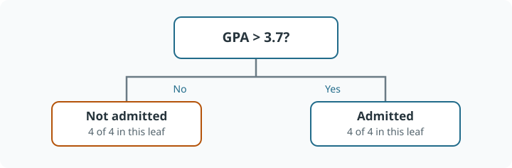

Decision Trees: From a Rule to CART
Learning goals
Compute Gini and entropy, derive regression-leaf predictions, explain greedy CART training, and distinguish pre-pruning from cost-complexity pruning.
Intuition
A decision tree routes an observation through questions such as “is this feature above a threshold?” until it reaches a leaf. Classification leaves estimate class proportions or a class label; squared-error regression leaves estimate a mean. Training asks which question most improves the fit, then repeats locally.
Trees capture nonlinearities and interactions without specifying product terms. An axis-aligned split can express a conditional relationship: work experience may matter only after a GPA split. However, an oblique boundary may require many rectangular regions.
Worked example
The following admissions data are a synthetic teaching example, not an admissions policy or real applicant record.
| ID | GPA | Experience | Recommendation | Admitted |
|---|---|---|---|---|
| 1 | 3.9 | 4 | 5 | Yes |
| 2 | 3.5 | 0 | 4 | No |
| 3 | 3.8 | 2 | 5 | Yes |
| 4 | 3.2 | 3 | 3 | No |
| 5 | 3.9 | 3 | 4 | Yes |
| 6 | 3.4 | 1 | 4 | No |
| 7 | 3.6 | 0 | 5 | No |
| 8 | 3.8 | 5 | 5 | Yes |
The root has four positives and four negatives, so Gini is \(1-0.5^2-0.5^2=0.5\). Splitting at GPA \(>3.7\) creates two pure groups of four: weighted child impurity is zero and gain is 0.5.

Splitting at experience \(>2\) creates groups with proportions \((1/4,3/4)\) and \((3/4,1/4)\). Each has impurity \(1-(1/4)^2-(3/4)^2=0.375\). The gain is \(0.5-0.375=0.125\), so the GPA split wins.
Theory and assumptions
Impurity and split search
For class proportions \(p_1,\ldots,p_K\),
\[I_G=1-\sum_kp_k^2,\qquad I_H=-\sum_kp_k\log_2p_k.\]
Gini is exactly the probability that two independent draws with replacement from the empirical class distribution disagree. Entropy measures expected information in bits, with \(0\log0=0\). Both are zero for pure nodes and largest for a uniform class mixture. Gini avoids logarithms; neither criterion is universally more accurate.
A candidate feature-threshold pair partitions a node into \(L,R\) and receives
\[\Delta=I_P-\frac{n_L}{n_P}I_L-\frac{n_R}{n_P}I_R.\]
Sort each feature, consider boundaries between distinct values, and accumulate class counts to evaluate candidate splits. A scan after sorting costs approximately \(O(nd)\) at a node; sorting itself costs more. A balanced tree can achieve an approximately \(O(nd\log n)\) training scale with suitable reuse, but this is not a guarantee for every implementation or highly unbalanced tree.
Why a regression leaf predicts the mean
For a leaf forced to predict a constant \(c\),
\[\frac{\partial}{\partial c}\sum_{i\in R}(y_i-c)^2=-2\sum_{i\in R}(y_i-c)=0 \quad\Longrightarrow\quad c=\bar y_R.\]
Its impurity is \(n_R^{-1}\sum_{i\in R}(y_i-\bar y_R)^2\). The split minimizes the sample-size-weighted child MSE. With absolute loss the optimal constant is a median instead.
Growth and pruning
CART recursively chooses the best admissible split, grows child trees, and stops when no split meets constraints. This is greedy optimization, not an exhaustive search over all trees.
Pre-pruning controls max_depth, min_samples_split, min_samples_leaf, min_impurity_decrease, and max_leaf_nodes. Post-pruning minimizes a criterion such as
\[R_\alpha(T)=R(T)+\alpha|\text{leaves}(T)|,\]
selecting \(\alpha\) with cross-validation along a pruning path. This can preserve an initially weak split whose descendants become useful. Available pruning controls depend on the implementation; post-pruning is not absent from modern tree libraries merely because defaults do not activate it.
Practice and pitfalls
Deep trees often have low training bias and high variance; stumps may instead have high bias. A tiny perturbation can change an early split and the whole tree. Minimum leaf sizes stabilize estimates and prevent spurious near-certain probabilities from one observation.
Feature scaling is generally unnecessary for threshold-based tree geometry. Categorical handling and missing-value support are implementation-specific; numeric category codes do not automatically imply a meaningful order. Trees trained on squared error predict leaf averages, so a standalone tree cannot extrapolate beyond the observed response range.
Interview questions
Why weight child impurities? Without sample weights, a tiny pure child could count as much as a large impure child.
Why are trees useful ensemble components? They are flexible and can be trained repeatedly; averaging reduces their instability, while additive boosting builds a stronger function from constrained trees.
Is a pure tree a good tree? Purity measures training fit. Generalization depends on complexity, data quality, and validation.
Summary
CART turns rule selection into a greedy impurity-reduction problem. Understand the leaf loss and stopping rule before interpreting the resulting tree.
References
Source coverage: ML and Causal Lecture Notes, Decision Tree/CART, all subsections. Further reading: Breiman, Friedman, Olshen, and Stone, Classification and Regression Trees (1984).